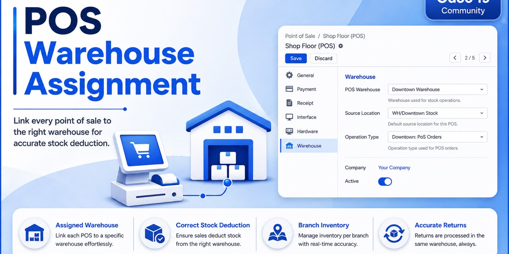
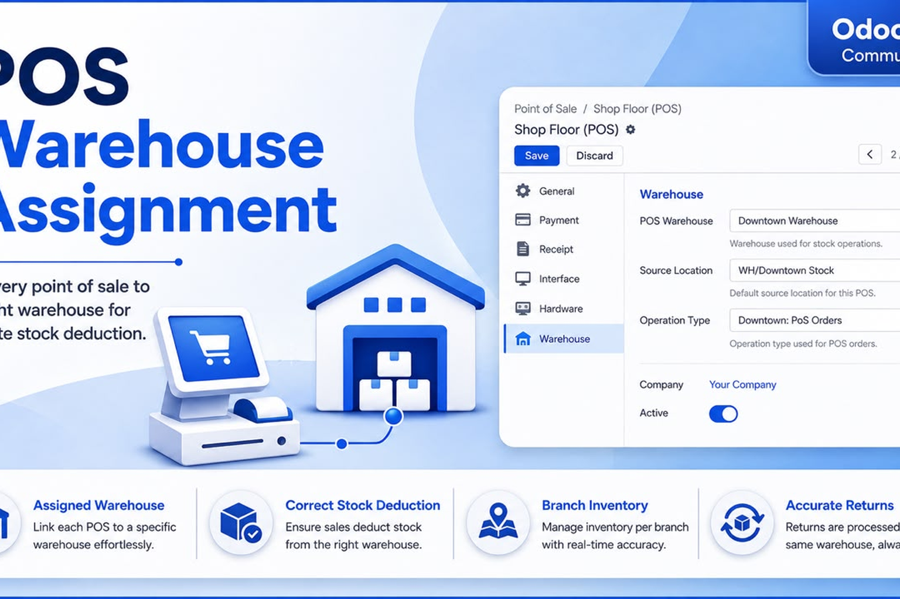

pos.config.warehouse_id, stock.warehouse.pos_type_id and the native
stock.picking / stock.move flow. No core file is modified, no direct
stock.quant update, and stock valuation, lots/serials and services behave exactly as in
standard Odoo.
A dedicated Inventory tab on every Point of Sale configuration. Pick the warehouse; the operation type and source stock location are derived automatically.
POS sales create the standard outgoing picking whose source location is the assigned
warehouse's stock (e.g. CAI/Stock). Other warehouses are never touched.
Full and partial returns go back into the assigned warehouse's stock — never into the company's default warehouse.
Cairo, Giza, Alexandria… each Point of Sale consumes its own branch warehouse. Several POS configurations can share the same warehouse.
The warehouse belongs to the POS configuration, not to the logged-in user or employee. Any cashier at the same POS uses the same warehouse.
A POS can only use a warehouse of its own company, and the warehouse cannot be changed while a POS session is open — so one session never consumes two warehouses.
CAI,
Giza GIZ, Alexandria ALX).Verified against Odoo 19 (Community Edition).
Works with automated / manual valuation, AVCO, FIFO and Standard Price.
Lots, serials and service products fully supported.
Offline POS friendly — no real-time stock blocking.
This module is published under the LGPL-3 license, developed by Flous Flow.